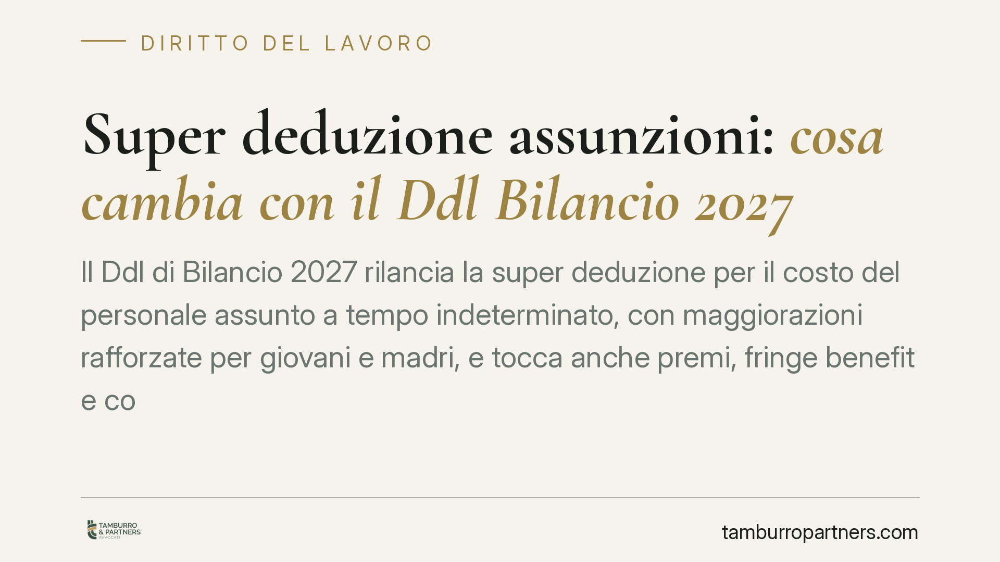

Super deduzione assunzioni: cosa cambia con il Ddl Bilancio 2027
Il Ddl di Bilancio 2027 rilancia la super deduzione per il costo del personale assunto a tempo indeterminato, con maggiorazioni rafforzate per giovani e madri, e tocca anche premi, fringe benefit e congedi parentali. Si tratta per ora di un disegno di legge: le percentuali circolate sulla stampa non sono ancora norma vigente. Vediamo cosa è certo e cosa resta da verificare.

L'impianto vigente: la super deduzione già in vigore
Prima di parlare delle novità annunciate, serve fissare il punto di partenza. La cosiddetta "super deduzione" delle nuove assunzioni è disciplinata dall'art. 4 del D.Lgs. 30 dicembre 2023, n. 216. La misura consente, ai fini della determinazione del reddito d'impresa e di lavoro autonomo, una maggiorazione del costo del lavoro deducibile per i nuovi assunti a tempo indeterminato.
La maggiorazione base è pari al 20% (deduzione al 120% del costo riferibile all'incremento occupazionale). Sale al 30% (deduzione al 130%) per l'assunzione di lavoratori appartenenti a categorie meritevoli di maggiore tutela indicate nell'Allegato 1 al decreto: tra questi, giovani ammessi agli incentivi all'occupazione, donne con determinati requisiti, ex percettori di reddito di cittadinanza, persone con disabilità.
I criteri attuativi sono fissati dal DM 25 giugno 2024 (Ministero dell'Economia, di concerto con il Lavoro).
Come si calcola l'incremento occupazionale
Il punto più delicato, in pratica, è il meccanismo dell'incremento. Il beneficio non spetta per ogni assunzione in sé, ma solo se, a fine periodo, l'organico risulta effettivamente cresciuto.
Il DM 25 giugno 2024 distingue due livelli:
- Incremento occupazionale "base": il numero dei dipendenti a tempo indeterminato a fine esercizio deve essere superiore alla media dell'anno precedente. Senza questo presupposto, nessuna deduzione maggiorata.
- Incremento occupazionale "complessivo": va verificato che sia aumentato anche il numero totale dei lavoratori (compresi quelli a termine) rispetto alla media del periodo precedente. Il costo agevolabile è il minore tra l'incremento del costo del nuovo personale a tempo indeterminato e l'incremento del costo complessivo del lavoro.
Per i gruppi societari il calcolo si effettua tenendo conto delle variazioni occupazionali in tutte le società controllate o collegate, così da evitare che un mero spostamento interno di personale generi indebitamente il beneficio.
Le novità annunciate dal Ddl Bilancio 2027
Secondo quanto riferito dalla stampa a seguito del Consiglio dei Ministri, il Ddl di Bilancio 2027 interverrebbe rafforzando la super deduzione, con maggiorazioni più elevate per l'assunzione di under 35 e di madri, oltre a prorogare la tassazione agevolata su aumenti contrattuali e premi di risultato, ampliare i fringe benefit per gli under 30 e allungare i congedi parentali retribuiti all'80%.
Avvertenza necessaria. Le percentuali potenziate circolate (indicate da alcune fonti nell'ordine del 140% per gli under 35 e del 180% per le madri) e la data di riferimento sono dato di stampa, non ancora legge. Il Ddl deve completare l'iter parlamentare e può subire modifiche sostanziali. Non vanno quindi assunte decisioni organizzative sulla base di cifre non confermate dal testo definitivo pubblicato in Gazzetta Ufficiale.
Implicazioni pratiche per le imprese
Per il datore di lavoro il tema non è solo l'aliquota, ma la programmazione. Il beneficio premia una crescita occupazionale effettiva e stabile: anticipare o concentrare le assunzioni senza verificare i requisiti di incremento espone al rischio di perdere la maggiorazione in sede di dichiarazione o di controllo.
Chi sta pianificando nuove assunzioni per il 2027 ha interesse a costruire fin da ora la documentazione a supporto: contratti, inquadramento nelle categorie agevolate, dati medi dell'organico.
Cosa fare in concreto
- Ricostruite i dati di organico medi dell'anno precedente, distinguendo tempo indeterminato e totale dipendenti: sono la base di ogni calcolo.
- Verificate l'appartenenza dei neoassunti alle categorie dell'Allegato 1 al D.Lgs. 216/2023, conservando la documentazione comprovante i requisiti.
- Se operate in gruppo, coordinate il monitoraggio occupazionale tra le società collegate, per evitare che trasferimenti interni azzerino il beneficio.
- Non deliberate assunzioni facendo affidamento sulle aliquote potenziate finché il Ddl non diventa legge: pianificate su scenari, non su titoli di giornale.
- Consigliamo di far validare il calcolo dell'incremento e la cumulabilità con altri incentivi da un professionista, prima della chiusura dell'esercizio.
---
Contributo informativo a cura di Tamburro & Partners Avvocati - Avv. Giuseppe Tamburro. Non costituisce parere legale.
Ogni storia di lavoro ha i suoi tempi.
Se gestisci HR e vuoi un confronto su contenzioso, ispezioni o licenziamenti, scrivi allo studio. Ti rispondiamo entro un giorno lavorativo.